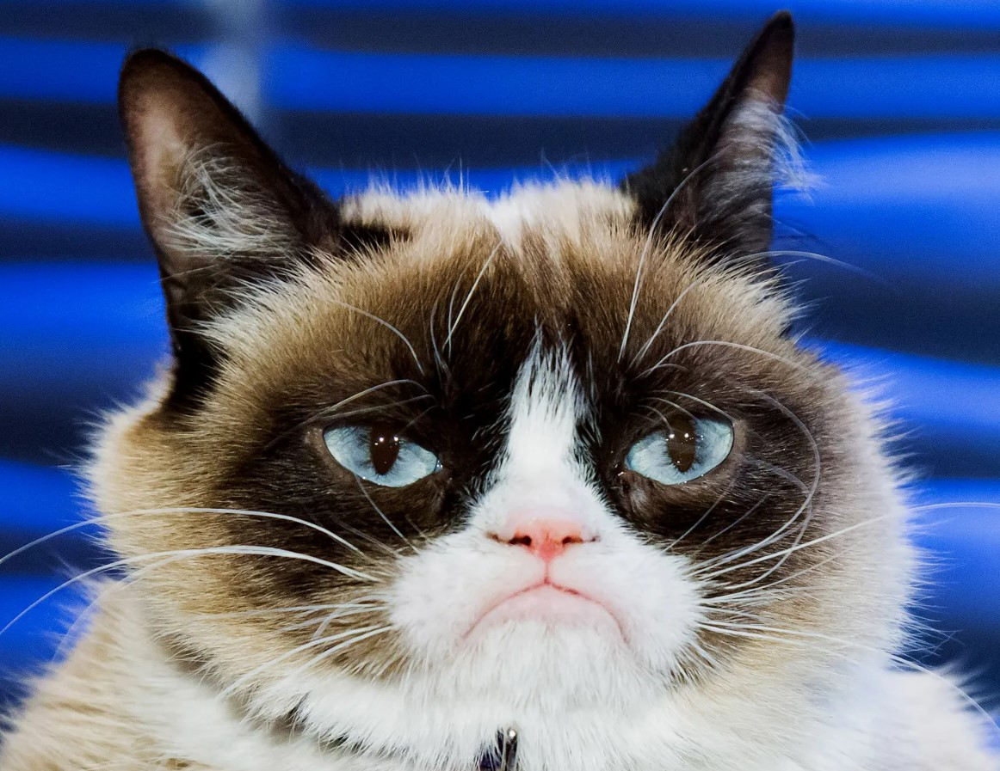

Lore
Grumpy Cat, once known as Felis Shadowwhisker, was once a noble feline who roamed the mystical lands of Eldermoor. Born into a prestigious family of magical cats, she was known for her sleek black fur, glowing amber eyes, and a powerful connection to the arcane forces of the forest. However, Grumpy Cat’s heart was as cold as the shadows she commanded. Unlike the other creatures of Eldermoor, who cherished peace and harmony, she grew jealous of the boundless love the villagers had for their dog hero, Milo. As Milo’s power grew and the village adored him, Grumpy Cat’s bitterness festered, turning her into a shadow of her former self. She began to covet the ancient magic of the Canis Luminis and plotted to steal it for herself, believing that only through domination of the forest’s light could she achieve true power. Over the years, Grumpy Cat's obsession with Milo grew into a dark, consuming force. Her once noble intentions became twisted by jealousy, and she transformed into a master of shadow magic. She prowled the night, summoning monstrous creatures and bending the very elements to her will, creating a storm of darkness wherever she went. Her cold, calculating nature made her a formidable foe, and unlike Milo, who relied on the power of friendship and light, Grumpy Cat thrived in solitude, using manipulation and cunning to get what she wanted. She began to orchestrate devious plots to weaken Milo’s connection to the forest’s magic, creating illusions and nightmares to make him doubt his own abilities. Grumpy Cat’s ultimate goal was to consume the heart of Eldermoor—the ancient oak tree that held the forest's soul and magic—destroying the peace Milo fought so hard to protect. Driven by her anger and jealousy, she viewed Milo as the only obstacle between her and ultimate power. She believed that by crushing him, she would prove her superiority and reshape the world in her image—one ruled by shadows, where no light would ever shine again. The rivalry between Grumpy Cat and Milo became legendary, as their battles waged across the land, with Milo’s light always fighting against Grumpy Cat’s unyielding darkness.
Abilities
- Claws of the Abyss – Grumpy Cat can conjure ethereal, shadow-infused claws that extend from her paws, capable of cutting through anything with ease. These claws are not just physical; they carry a dark magic that can tear apart the very fabric of light and reality. When Grumpy Cat strikes, her enemies feel the weight of the shadows within her claws, draining their energy and leaving them weakened.
- Silent Pounce – Grumpy Cat’s stealth is unmatched. She can blend into the shadows completely, becoming nearly invisible to her foes. At will, she can leap with incredible speed and precision, striking from the darkness without a sound, catching her opponents off guard. Her pounce is so swift and silent that her enemies only realize they’ve been attacked when it’s too late, leaving them vulnerable to further strikes.
- Cat’s Call – With a chilling, hypnotic yowl, Grumpy Cat can summon the spirits of her fallen feline ancestors to fight by her side. These spectral cats, formed from the shadows, obey her every command. They can attack, scout, or defend, making them formidable allies in battle. The spirits of her ancestors are bound by loyalty to Grumpy Cat, and together, they are a force to be reckoned with, striking fear into anyone who dares face them.
- Nine Lives of Darkness – Drawing on the ancient myth that cats have multiple lives, Grumpy Cat can tap into the dark magic of her own nine lives. With each “life,” she is granted the ability to recover from near-fatal injuries and return to the fight stronger than before. However, each resurrection comes at a cost—she becomes more entwined with shadow magic, her powers growing darker and more unpredictable with each life she uses. When all her lives are spent, Grumpy Cat can unleash her most devastating form, becoming a being of pure shadow with godlike abilities for a short time before her essence is consumed entirely.
IT IS I, GRUMPY CAT!!
I am so evil omg